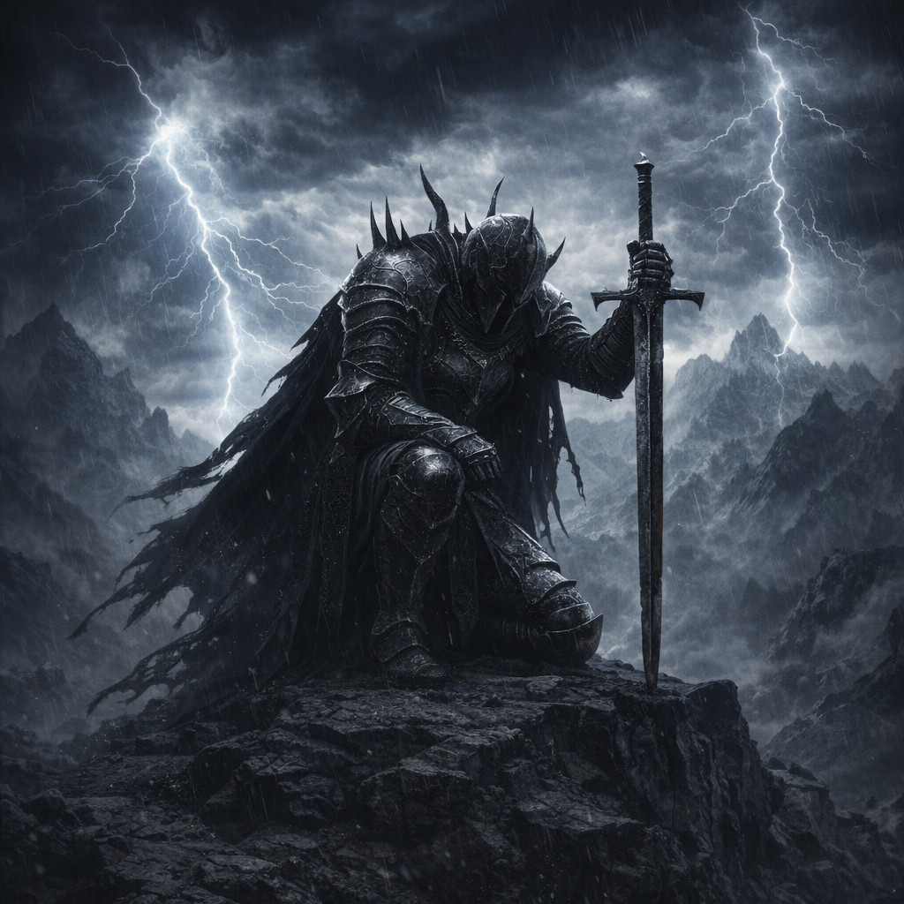
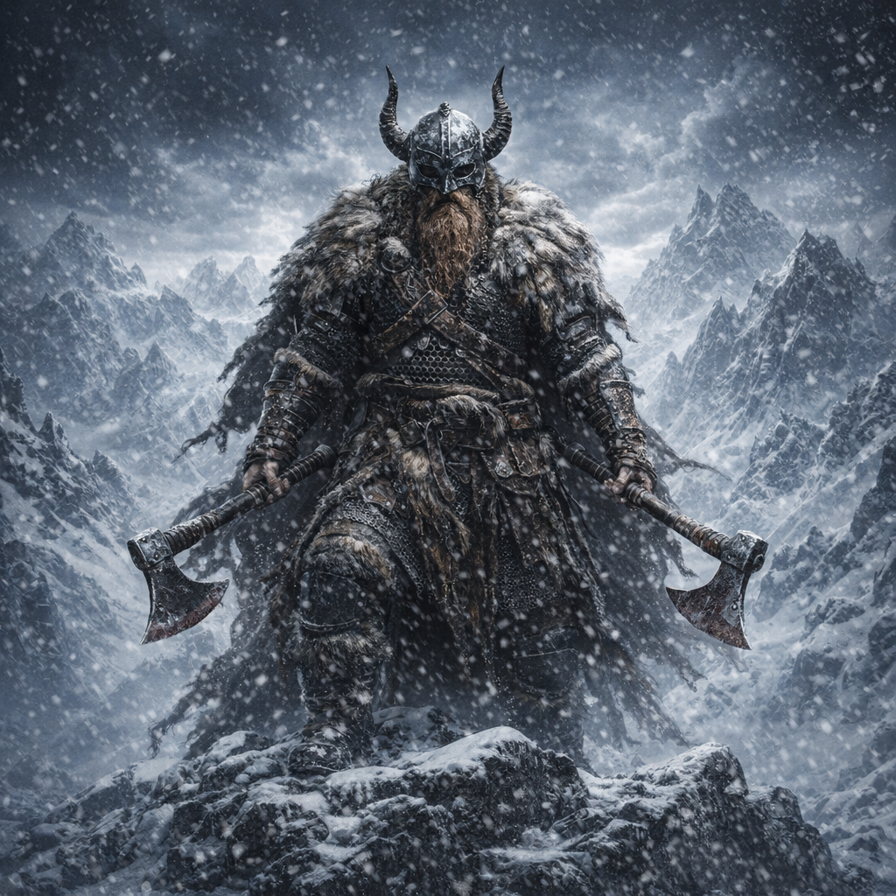
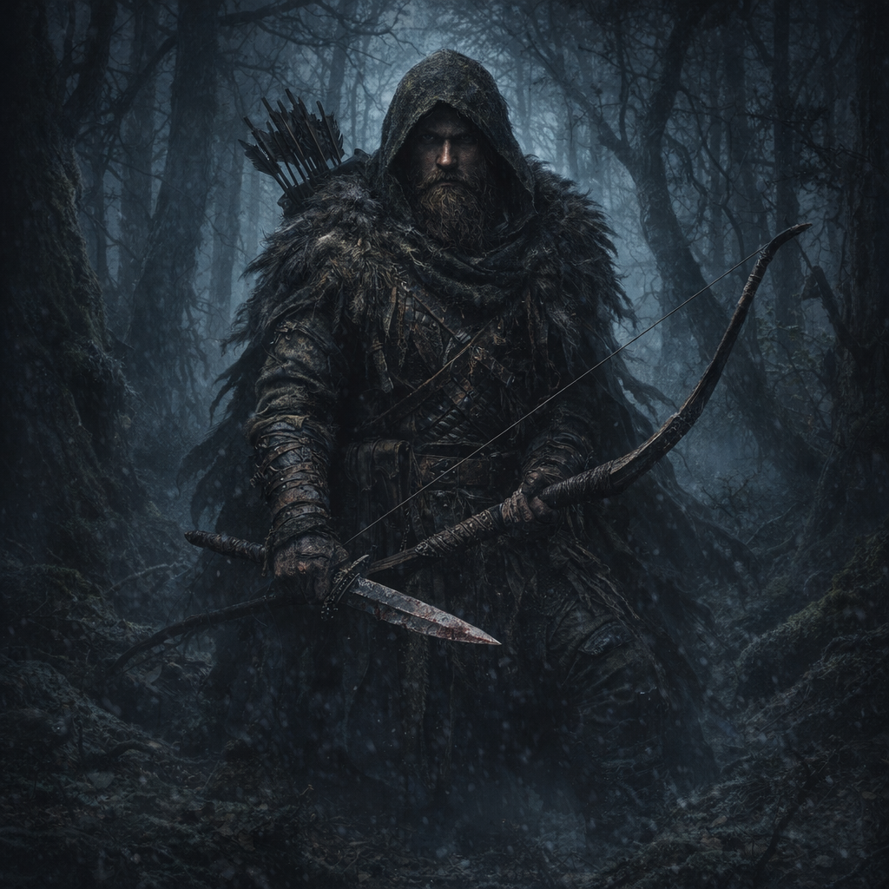
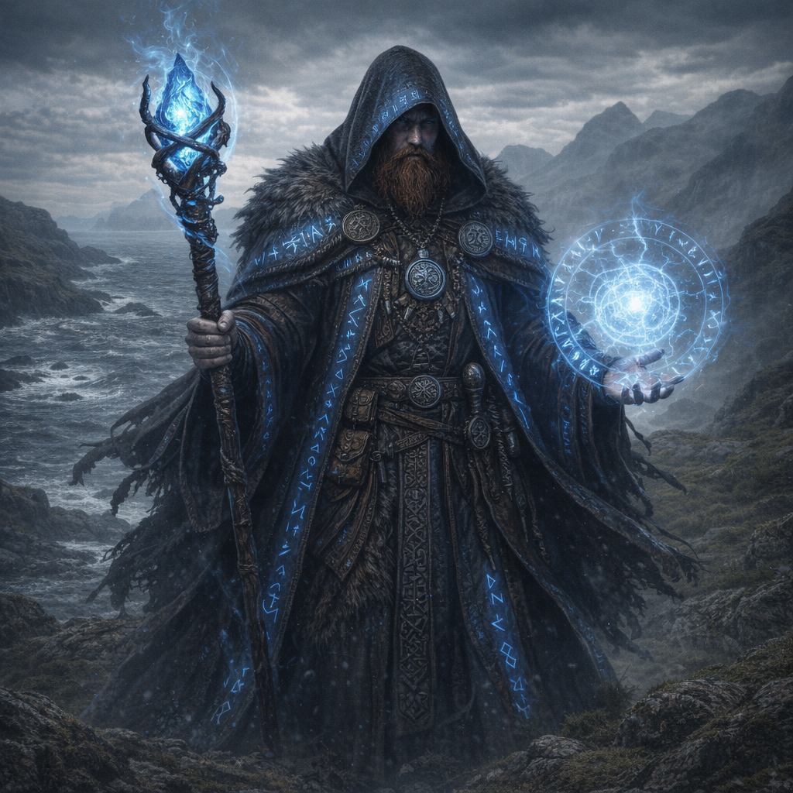

Demnächst · Godot 4
Crown
of Ashes
Dark Fantasy Action-RPG
“Die Krone trägt nicht — sie zerstört.”
Eldharyn war einmal eine Welt voller Ordnung — strenge Königreiche, Götter, die noch antworteten, und Helden, die noch glaubten. Das ist lange vorbei.
Die Aschekönig-Kriege haben alles verändert. Die Krone — ein Artefakt, das keiner vollständig versteht — wurde zersplittert. Ihre Scherben trieben die Träger in den Wahnsinn oder in den Tod.
Du spielst jemanden, der keine Wahl mehr hat. Die Welt fällt. Entweder findest du alle Scherben der Krone und setzt sie zusammen — oder du lässt zu, dass das Letzte, was von Eldharyn übrig ist, in Asche fällt.




Crown of Ashes ist unser zweites Spiel — aber das Herz dahinter ist dasselbe. Wir entwickeln auf Consumer-Hardware, mit echtem Blut, Schweiß und Leidenschaft.
Wenn du unsere Arbeit unterstützen möchtest, freuen wir uns über jede Spende. Sie hilft uns direkt bei Avadon und macht Crown of Ashes schneller möglich.
Keine Gegenleistung — nur Liebe für Indie-Spiele.
Mit PayPal unterstützen